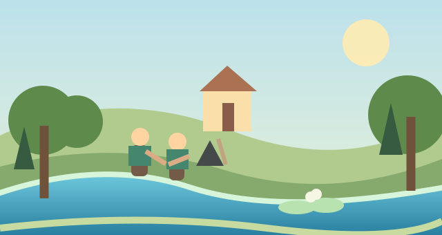
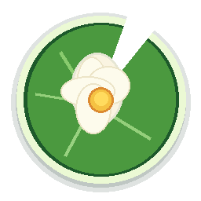

Territoire réel · rendu low-poly · bâtiments OSM · routes IGN V8.2 · relief RGE local si disponible


Cette portion de la Py rejoint ton domaine.
+1, +5 ou +10 : nouvelle offre par rapport à l'offre actuelle. Le gagnant paie son offre complète et perd 2 points éco. L'autre joueur peut laisser gagner le dernier enchérisseur.
Saisis le nom de chaque joueur et choisis son personnage. Un personnage ne peut être attribué qu’une fois.
20 tours par joueur terminés
Score final : 50 % écologie, 30 % patrimoine, 20 % monnaie. Le tableau affiche uniquement les 3 ressources, le total pondéré et le rang de chaque joueur pour chaque ressource. Les ponts gratuits, le pot communal et les monopoles ne donnent aucun bonus final. Départage : écologie, puis patrimoine, puis victoire partagée.